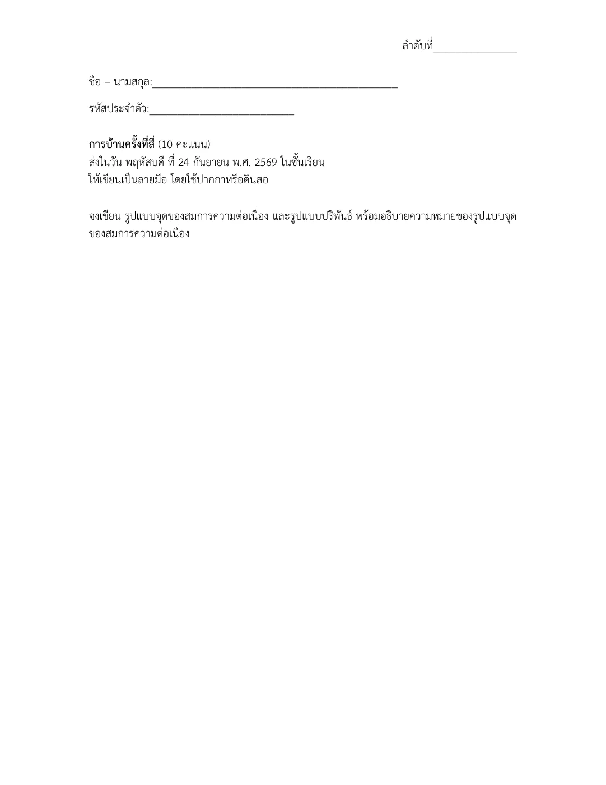
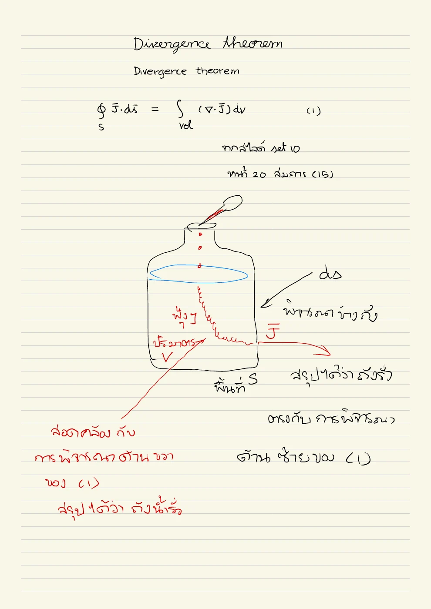
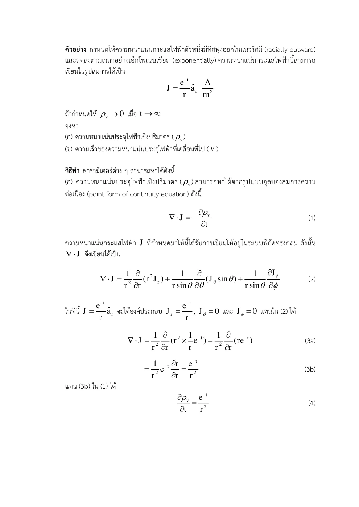
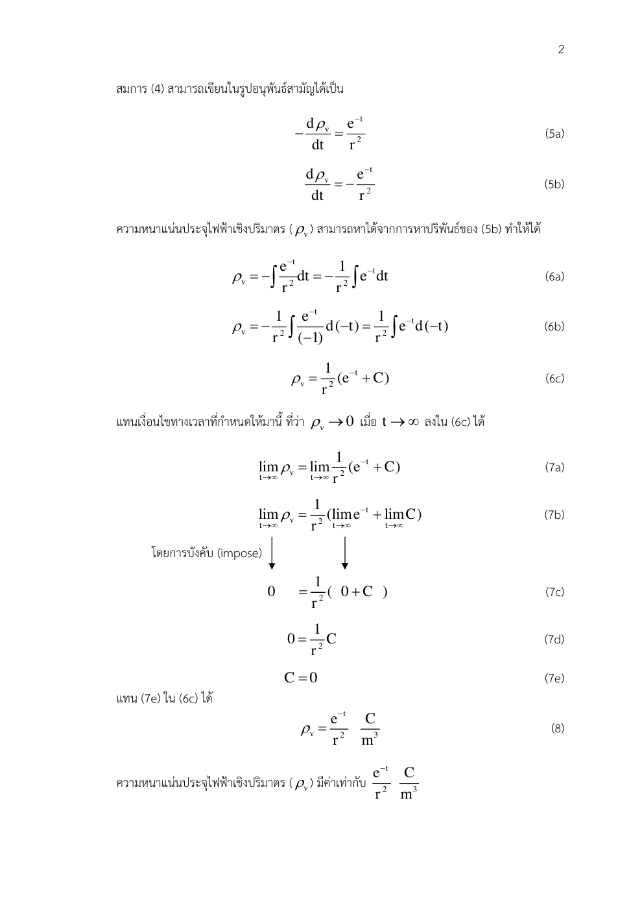
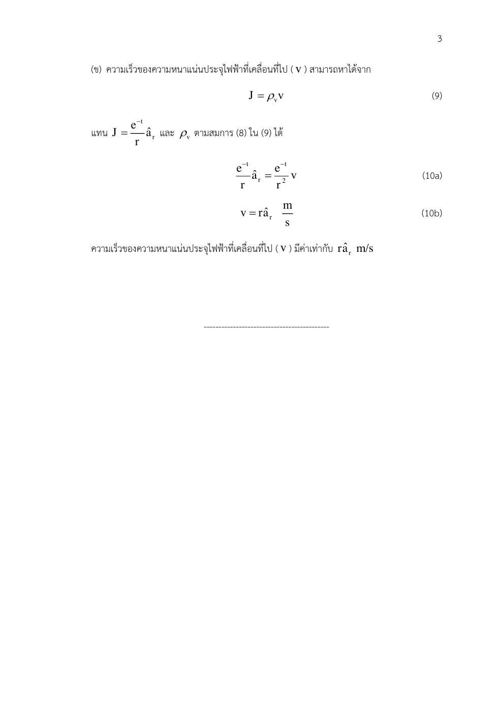

01 สูตรทั่วไปของกระแสผ่านผิว
I=∫SJ • ds; Jn=dQdt ds
เหตุใดจึงแปลงรูปเช่นนี้? เลือกผิวและปกติก่อน เครื่องหมายกระแสขึ้นกับทิศที่เลือก หน่วย J เป็น A/m²
Current & Conductors · Hayt §5.1–5.4; Sadiku §5.5–5.6
สนามไฟฟ้าทำให้ประจุเคลื่อนอย่างไร และจะตรวจได้อย่างไรว่าประจุไม่ได้หายไปจากระบบ?
ในโลหะ อิเล็กตรอนเคลื่อนเร็วจากพลังงานความร้อน แต่ทิศสุ่มทำให้ค่าเฉลี่ยเป็นศูนย์ เมื่อมีสนามไฟฟ้า อิเล็กตรอนถูกเร่งระหว่างการกระเจิงกับโครงผลึกและสิ่งรบกวน แล้วได้ความเร็วเฉลี่ยเล็กที่เรียกว่า drift ความเร็วนี้สวน E เพราะประจุอิเล็กตรอนเป็นลบ
กระแสตามข้อตกลงชี้ทิศการขนประจุบวก ดังนั้นอิเล็กตรอนเคลื่อนสวนสนามแต่ J กลับชี้ตามสนาม การชนไม่ได้ทำให้อิเล็กตรอนหยุดตลอดเวลา แบบจำลองเวลาผ่อนคลายแทนผลเฉลี่ยของการกระเจิงจำนวนมาก
หากประจุออกจากกล่องมากกว่าที่เข้า ประจุสะสมในกล่องต้องลด สมการต่อเนื่องเป็นบัญชีประจุและจริงแม้กระแสเปลี่ยนเวลา ต่างจากกฎโอห์มเฉพาะที่ซึ่งเป็นแบบจำลองวัสดุ
ขอบเขตแบบจำลอง: แบบจำลอง Drude เป็นแบบคลาสสิกเฉลี่ย; ความนำคงที่และไม่รวมผลความถี่สูงหรืออุณหภูมิเปลี่ยน
เหตุใดจึงแปลงรูปเช่นนี้? เลือกผิวและปกติก่อน เครื่องหมายกระแสขึ้นกับทิศที่เลือก หน่วย J เป็น A/m²
เหตุใดจึงแปลงรูปเช่นนี้? ในเวลา Δt ประจุในแท่งยาว vnΔt ผ่านพื้นที่ Δs จึงได้กระแสพาจากปริมาตรที่เคลื่อน
เหตุใดจึงแปลงรูปเช่นนี้? e คือขนาดประจุอิเล็กตรอนเป็นบวก ส่วน τ เป็นเวลาผ่อนคลาย ในภาวะเฉลี่ยคงตัวอนุพันธ์เวลาเป็นศูนย์
เหตุใดจึงแปลงรูปเช่นนี้? n เป็นจำนวนอิเล็กตรอนต่อปริมาตร ลบของประจุกับลบของ drift ตัดกัน ความนำต้องเป็นบวกในแบบจำลองนี้
เหตุใดจึงแปลงรูปเช่นนี้? ซ้ายเป็นกระแสสุทธิออก หากเป็นบวก ประจุภายในลดจึงมีลบหน้าการเปลี่ยนประจุ
เหตุใดจึงแปลงรูปเช่นนี้? ใช้ divergence theorem และปริมาตรคงที่ เนื่องจากจริงสำหรับทุกกล่อง อินทิแกรนด์จึงต้องเป็นศูนย์
เหตุใดจึงแปลงรูปเช่นนี้? เป็นรัศมีทรงกลมจึงใช้ r² ไม่ใช่สูตรทรงกระบอก ถือ t คงที่เมื่อหาอนุพันธ์ r
เหตุใดจึงแปลงรูปเช่นนี้? อินทิเกรตเวลาแล้วค่าคงตัวอาจขึ้นกับตำแหน่ง ต้องใช้เงื่อนไขปลายเวลา ต้นฉบับละค่าคงตัวที่ทำให้เลขชี้กำลังไม่มีหน่วยไว้โดยนัย
เขียนสูตรทั่วไป → ระบุพิกัดและทิศ → วิเคราะห์ด้วยมือ → ใช้ขอบเขต → ตรวจหน่วย SI และความหมาย
บัสบาร์ที่มีกระแสเท่ากันอาจมี J ต่างกันเมื่อพื้นที่ต่าง ความร้อนเฉพาะที่เป็น J•E=σE² จึงต้องพิจารณาหน้าตัดและการกระจายกระแส
สมการต่อเนื่องเป็นฐานของกฎกระแสที่โหนด ส่วนการสะสมประจุบนแผ่นตัวเก็บประจุจะทำให้ต้องเพิ่มกระแสการกระจัดใน Set 21
ลองอธิบายด้วยคำของตนเอง: ถ้า J ชี้ออกและ divergence เป็นบวก ประจุในกล่องเพิ่มหรือลด? ใช้บัญชีประจุก่อนดูสมการ
เพิ่ม σ เป็นสองเท่าโดยตรึง E ทำนาย J เพิ่มสองเท่า เทียบกับการตรึงกระแสซึ่งทำให้ E ลดลง
ก่อนปรับ: ทำนายทิศและขนาด · หลังปรับ: อธิบายด้วยสมการและเงื่อนไข
แนวคิดของบทนี้เป็นฐานให้ Set 11, Set 15, Set 16, Set 21
เลขหน้าทั้งหมดนับหน้า PDF รวมปก ตำราเป็นแหล่งตรวจวิธีและนิยาม ไม่ได้กล่าวว่าข้อมูลทุกตัวอย่างตรงกับข้อสอบ บทอธิบายและการพิสูจน์ด้านบนเรียบเรียงเพื่อการสอน
กระแสเป็นอัตราประจุที่ตัดผ่านพื้นที่ ส่วนความหนาแน่นกระแสเป็นเวกเตอร์ที่บอกทั้งปริมาณและทิศการขนส่งประจุ การอนุรักษ์ประจุเชื่อมกระแสที่ไหลออกกับประจุที่ลดลงภายในบริเวณนั้น
อ่าน สไลด์หลัก · หน้า PDF 1 ควบคู่กับคำอธิบายด้านล่าง เพื่อเทียบรูปและลำดับสมการ
ผิวเปิดใช้ทิศปกติที่เราเลือก ผิวปิดต้องชี้ออก เมื่อกระแสไหลออกเป็นบวก ประจุภายในจึงลดลง ต้องมีเครื่องหมายลบในสมการความต่อเนื่อง ตัวนำที่มีกระแสคงตัวอาจมีสนามไฟฟ้าภายในได้; สนามภายในเป็นศูนย์เฉพาะสมดุลไฟฟ้าสถิต
กล่องประจุที่เคลื่อนในเวลา Δt ผ่านพื้นที่ Δs มีปริมาตร Δs vnΔt จึงมี ΔQ = ρvΔs vnΔt หารด้วยเวลาและพื้นที่ได้ Jn = ρvvn รวมทุกแกนได้ J = ρvv
ปริมาตรเลือกได้ทั่วไป จึงบังคับให้ integrand เป็นศูนย์ เกิดสมการความต่อเนื่อง สำหรับลวดพื้นที่ S ยาว L ที่ σ คงที่และ E สม่ำเสมอ ใช้ J = σE กับ E = V/L ได้ I = σVS/L และ R = L/(σS) หน่วย Ω
| สัญลักษณ์ | ความหมาย / คำอ่าน | SI |
|---|---|---|
| I | กระแส conventional current | A |
| J | ความหนาแน่นกระแส | A/m² |
| ρv | ความหนาแน่นประจุเชิงปริมาตร | C/m³ |
| v | ความเร็วประจุ | m/s |
| σ | สภาพนำไฟฟ้า | S/m |
แสดง 23 หน้า
แต่ละรายการเรียบเรียงภาษาไทย พร้อมภาพต้นฉบับหน้าเดียวกัน ภาพคงรูปเวกเตอร์และลำดับการพิสูจน์ของอาจารย์ เปิดเฉพาะหน้าที่ต้องการอ่าน
| สัญลักษณ์ | คำอ่านและความหมาย | SI |
|---|---|---|
| x,y,z; r,ρ; θ,ϕ | เอ็กซ์ วาย แซด; อาร์ โร; ทีตา ไฟ · พิกัดและมุม | m; m; rad |
| E, D; H, B | อี ดี; เอช บี · สนามและฟลักซ์ไฟฟ้า/แม่เหล็ก | V/m, C/m²; A/m, T |
| J, K; ρv, ρs | เจ เค; โรซับวี โรซับเอส · กระแสปริมาตร/ผิวและประจุปริมาตร/ผิว | A/m², A/m; C/m³, C/m² |
| ε, μ, σ; εr, μr | เอปไซลอน มิว ซิกมา · สภาพยอม ความซาบซึมได้ สภาพนำ; ค่าสัมพัทธ์ | F/m, H/m, S/m; ไม่มีหน่วย |
| P, χe | พี ไคซับอี · โพลาไรเซชันและความไวทางไฟฟ้า | C/m², ไม่มีหน่วย |
| I, Q, q; V, V0 | ไอ คิว คิว; วี วีซับศูนย์ · กระแส ประจุรวม/ย่อย ศักย์/แรงดันกำหนด | A, C, C; V, V |
| C, W; S, A; d,L | ซี ดับเบิลยู; เอส เอ; ดี แอล · ความจุ พลังงาน พื้นที่ ระยะห่าง ความยาว | F, J; m², m²; m,m |
| A, Φ | เอ ไฟตัวใหญ่ · ศักย์เวกเตอร์แม่เหล็กและฟลักซ์ | Wb/m, Wb |
| ω, f, λ; k, η | โอเมกา เอฟ แลมบ์ดา; เค อีตา · ความถี่เชิงมุม ความถี่ ความยาวคลื่น เลขคลื่น อิมพีแดนซ์ | rad/s, Hz, m; rad/m, Ω |
| v, t; dl, ds, dv | วี ที; ดีแอล ดีเอส ดีวี · ความเร็ว เวลา ส่วนย่อยความยาว ผิว ปริมาตร | m/s, s; m,m²,m³ |
| an, j; ∇, ∇2 | เอซับเอ็น เจ; เดล ลาปลาเซียน · เวกเตอร์หน่วย หน่วยจินตภาพ ตัวดำเนินการพื้นที่ | ไม่มีหน่วย; ต่อระยะทางและระยะทาง² |
| Es, Hs | อีซับเอส เอชซับเอส · เฟสเซอร์เชิงอวกาศ | V/m, A/m |
องค์ประกอบสนามมีหน่วยเดียวกับสนาม ตัวห้อย t,n คือสัมผัสและปกติ ตัวห้อย 1,2 คือตัวกลาง ไพรม์ระบุแหล่งกำเนิด a ที่เป็นค่าคงตัวจากการอินทิเกรตมีหน่วยตามสมการที่ใช้; a ที่เป็นเวกเตอร์หน่วยไม่มีหน่วย
ให้ J = e−trar A/m2 สำหรับ r > 0 และให้ ρv → 0 เมื่อ t → ∞ จงหา ρv และ v โดยแสดงการอินทิเกรตตามเวลา (r ใช้หน่วย m และ t ใช้หน่วย s; ค่าสัมประสิทธิ์ของเลขชี้กำลังมีค่า 1 s−1)
ALL-Q01 · ตัวอย่างต่อเนื่อง · เรียบเรียงจากไฟล์จริง · ตัวอย่าง Set 10 · หน้า PDF 1 · ชุดโจทย์เดิม · หน้า PDF 1 · Hayt §5.2 · ตัวอย่าง J รัศมี · หน้า PDF 127 · Sadiku สมการความต่อเนื่อง · หน้า PDF 191
ปริมาตรอยู่นิ่งและปกติผิวปิดชี้ออก ใช้สูตรทรงกลมให้ตรงกับสนามที่กำหนด
ทำไมจึงทำขั้นนี้? ความต่อเนื่องวัดอัตราประจุที่ลดจากการไหลออก จึงมีเครื่องหมายลบ
ทำไมจึงทำขั้นนี้? ซ้ายเป็นกระแสสุทธิออก หากเป็นบวก ประจุภายในลดจึงมีลบหน้าการเปลี่ยนประจุ
ทำไมจึงทำขั้นนี้? ใช้ divergence theorem และปริมาตรคงที่ เนื่องจากจริงสำหรับทุกกล่อง อินทิแกรนด์จึงต้องเป็นศูนย์
ทำไมจึงทำขั้นนี้? เป็นรัศมีทรงกลมจึงใช้ r² ไม่ใช่สูตรทรงกระบอก ถือ t คงที่เมื่อหาอนุพันธ์ r
ทำไมจึงทำขั้นนี้? อินทิเกรตเวลาแล้วค่าคงตัวอาจขึ้นกับตำแหน่ง ต้องใช้เงื่อนไขปลายเวลา ต้นฉบับละค่าคงตัวที่ทำให้เลขชี้กำลังไม่มีหน่วยไว้โดยนัย
ไดเวอร์เจนซ์บวกสอดคล้องกับประจุที่ลดลง; ใช้สูตรการพาในการหาความเร็ว
ทำไมจึงทำขั้นนี้? หาร J ด้วยความหนาแน่นประจุได้ความเร็วพา ตรวจหน่วยให้เป็น m/s
ให้ J = 10ρ2z aρ − 4ρ cos2ϕ aϕ mA/m2 จงหา J ที่ P(3,30°,2) และกระแสออกผ่านผิว ρ = 3, 0 ≤ ϕ ≤ 2π, 2 ≤ z ≤ 2.8 (พิกัดความยาวเป็น m)
Drill ตำรา: คงค่าตามต้นฉบับ · Hayt D5.1 · หน้า PDF 125 · Set 10 · สูตรพื้นฐานที่เกี่ยวข้อง · หน้า PDF 4
1 mA/m² = 10⁻³ A/m²; ใช้ผิวข้างทรงกระบอก ไม่รวมฝาปิด
ทำไมจึงทำขั้นนี้? กระแสเป็นอินทิกรัล J ผ่านผิว ต้องเขียนส่วนย่อยทรงกระบอกก่อนแทนรัศมี
ทำไมจึงทำขั้นนี้? แทน ρ=3, ϕ=30°, z=2 หลังแจกแจงองค์ประกอบและหน่วย mA
ทำไมจึงทำขั้นนี้? ผลคูณจุดเลือกเฉพาะส่วนรัศมี แล้วอินทิเกรตมุมก่อน z ด้วยมือ
องค์ประกอบ aϕ ขนานผิวจึงไม่ผ่านพื้นที่ คำตอบตำรา 3.26 A ตรงกับการปัดสามหลัก
ทำไมจึงทำขั้นนี้? พจน์สัมผัสไม่ทะลุผิว ตรวจผลด้วยคำตอบต้นฉบับ
เลื่อนพารามิเตอร์เพื่อดูแนวโน้มและเครื่องหมาย แล้วกลับไปพิสูจน์ด้วยสูตรตั้งต้นในตัวอย่าง
ตัวอย่างเพิ่มเติม โน้ต และภาพลายมือแสดงเป็นหน้าต้นฉบับเรียงลำดับ ใช้คำอธิบายและวิธีทำในบทนี้ประกอบ
เขียนรูปจุดและอินทิกรัลของสมการความต่อเนื่อง พร้อมอธิบายว่ากระแสลู่ออกทำให้ประจุลดลง ไม่ใช้วันส่งเดิมเป็นกำหนดการสอบ

เทียบอินทิกรัลผิวปิดกับปริมาตร ปกติทุกด้านต้องชี้ออก กระแสที่เข้ามีเครื่องหมายลบ

เลือกไดเวอร์เจนซ์ทรงกลม จาก Jr = exp(−t)/r ได้ div J = exp(−t)/r²

อินทิเกรตเวลาโดยถือ r คงที่ ใช้เงื่อนไขที่เวลาอนันต์เพื่อให้ค่าคงตัวเป็นศูนย์

ใช้ J = ρv v หารด้วยประจุที่หาได้ จึงได้ v = r ar หน่วย m/s
